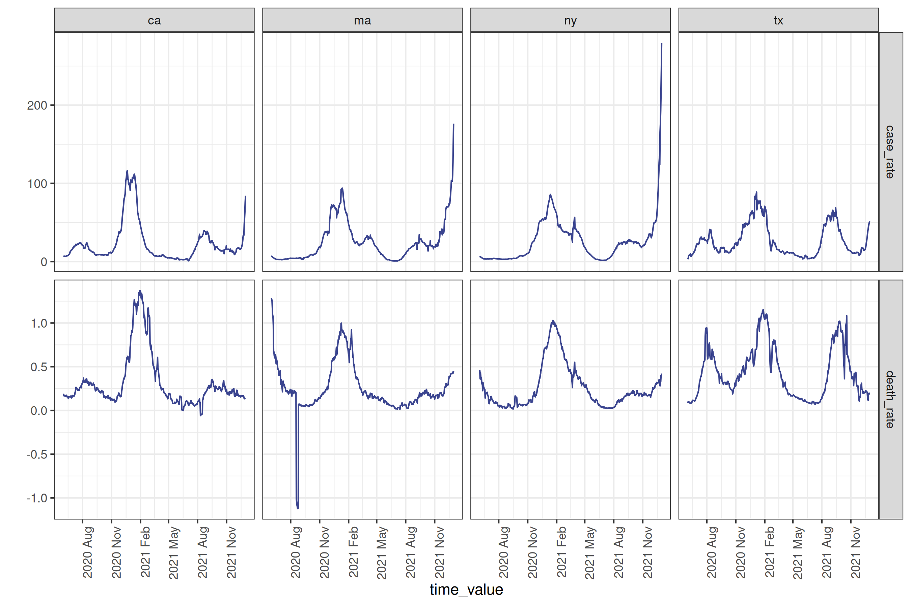
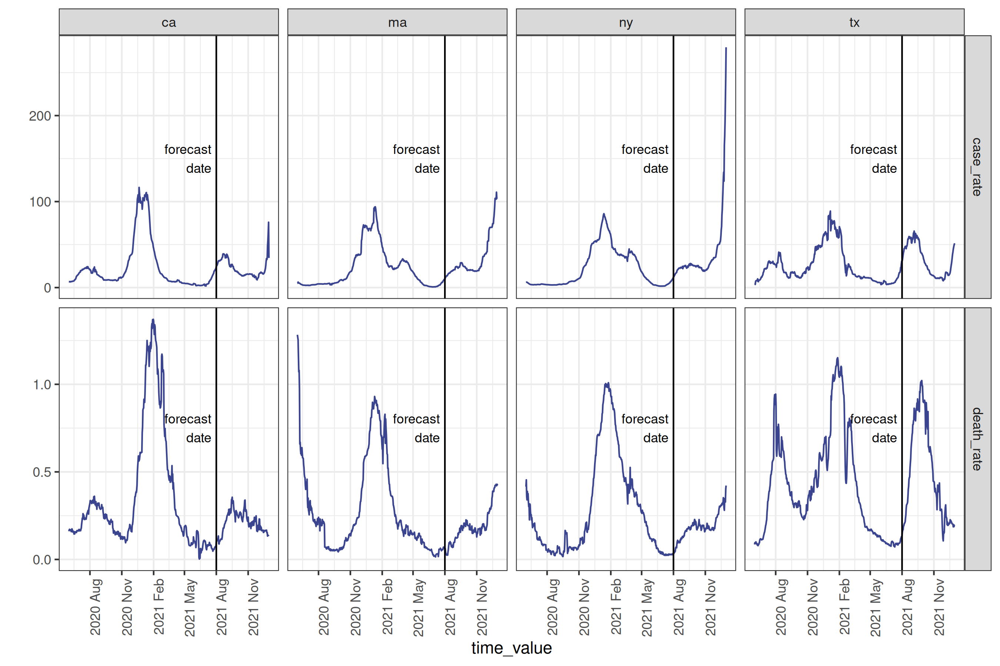
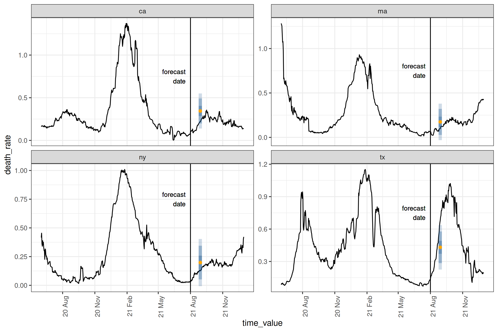

{epipredict} is a framework for building transformation and forecasting pipelines for epidemiological and other panel time-series datasets. In addition to tools for building forecasting pipelines, it contains a number of “canned” forecasters meant to run with little modification as an easy way to get started forecasting.
It is designed to work well with {epiprocess}, a utility for time series handling and geographic processing in an epidemiological context. Both of the packages are meant to work well with the panel data provided by {epidatr}. Pre-compiled example datasets are also available in {epidatasets}.
If you are looking for detail beyond the package documentation, see our forecasting book.
Installation
Unless you’re planning on contributing to package development, we suggest using the stable version. To install, run:
# Stable version
pak::pkg_install("cmu-delphi/epipredict@main")
# Dev version
pak::pkg_install("cmu-delphi/epipredict@dev")The documentation for the stable version is at https://cmu-delphi.github.io/epipredict, while the development version is at https://cmu-delphi.github.io/epipredict/dev.
Motivating example
Required packages
To demonstrate using {epipredict} for forecasting, suppose we want to predict COVID-19 deaths per 100k people for each of a subset of states
used_locations <- c("ca", "ma", "ny", "tx")on
forecast_date <- as.Date("2021-08-01")We will be using a subset of Johns Hopkins Center for Systems Science and Engineering deaths data. Below the fold, we pull the dataset from the epidata API and clean it.
Creating the dataset using {epidatr} and {epiprocess}
This section is intended to demonstrate some of the ubiquitous cleaning operations needed to be able to forecast. A subset of the dataset prepared here is also included ready-to-go in {epipredict} as covid_case_death_rates.
First we pull both jhu-csse cases and deaths data from the Delphi API using the {epidatr} package:
cases <- pub_covidcast(
source = "jhu-csse",
signals = "confirmed_7dav_incidence_prop",
time_type = "day",
geo_type = "state",
time_values = epirange(20200601, 20211231),
geo_values = "*"
) |>
select(geo_value, time_value, case_rate = value)
deaths <- pub_covidcast(
source = "jhu-csse",
signals = "deaths_7dav_incidence_prop",
time_type = "day",
geo_type = "state",
time_values = epirange(20200601, 20211231),
geo_values = "*"
) |>
select(geo_value, time_value, death_rate = value)
cases_deaths <-
full_join(cases, deaths, by = c("time_value", "geo_value")) |>
filter(geo_value %in% used_locations) |>
as_epi_df(as_of = as.Date("2022-01-01"))Since visualizing the results on every geography is somewhat overwhelming, we’ll only train on a subset of locations.
# plotting the data as it was downloaded
cases_deaths |>
autoplot(
case_rate,
death_rate,
.color_by = "none"
) +
facet_grid(
rows = vars(.response_name),
cols = vars(geo_value),
scale = "free"
) +
scale_x_date(date_breaks = "3 months", date_labels = "%Y %b") +
theme(axis.text.x = element_text(angle = 90, hjust = 1))
As with the typical dataset, we will need to do some cleaning to make it actually usable; we’ll use some utilities from {epiprocess} for this. Specifically we’ll trim outliers, especially negative values:
cases_deaths <-
cases_deaths |>
group_by(geo_value) |>
mutate(
outlr_death_rate = detect_outlr_rm(
time_value, death_rate,
detect_negatives = TRUE
),
outlr_case_rate = detect_outlr_rm(
time_value, case_rate,
detect_negatives = TRUE
)
) |>
unnest(cols = starts_with("outlr"), names_sep = "_") |>
ungroup() |>
mutate(
death_rate = outlr_death_rate_replacement,
case_rate = outlr_case_rate_replacement
) |>
select(geo_value, time_value, case_rate, death_rate)After downloading and cleaning deaths per capita, as well as cases per 100k people, we can plot a subset of the states, marking the desired forecast date with a vertical line:
Plot
forecast_date_label <-
tibble(
geo_value = rep(used_locations, 2),
.response_name = c(rep("case_rate", 4), rep("death_rate", 4)),
dates = rep(forecast_date - 7 * 2, 2 * length(used_locations)),
heights = c(rep(150, 4), rep(0.75, 4))
)
processed_data_plot <-
cases_deaths |>
filter(geo_value %in% used_locations) |>
autoplot(
case_rate,
death_rate,
.color_by = "none"
) +
facet_grid(
rows = vars(.response_name),
cols = vars(geo_value),
scale = "free"
) +
geom_vline(aes(xintercept = forecast_date)) +
geom_text(
data = forecast_date_label,
aes(x = dates, label = "forecast\ndate", y = heights),
size = 3, hjust = "right"
) +
scale_x_date(date_breaks = "3 months", date_labels = "%Y %b") +
theme(axis.text.x = element_text(angle = 90, hjust = 1))
To make a forecast, we will use a simple “canned” auto-regressive forecaster to predict the death rate four weeks into the future using lagged1 deaths and cases.
four_week_ahead <- arx_forecaster(
cases_deaths |> filter(time_value <= forecast_date),
outcome = "death_rate",
predictors = c("case_rate", "death_rate"),
args_list = arx_args_list(
lags = list(c(0, 1, 2, 3, 7, 14), c(0, 7, 14)),
ahead = 4 * 7,
quantile_levels = c(0.1, 0.25, 0.5, 0.75, 0.9)
)
)
four_week_ahead
#> ══ A basic forecaster of type ARX Forecaster ════════════════════════════════
#>
#> This forecaster was fit on 2025-05-22 11:56:44.
#>
#> Training data was an <epi_df> with:
#> • Geography: state,
#> • Time type: day,
#> • Using data up-to-date as of: 2022-01-01.
#> • With the last data available on 2021-08-01
#>
#> ── Predictions ──────────────────────────────────────────────────────────────
#>
#> A total of 4 predictions are available for
#> • 4 unique geographic regions,
#> • At forecast date: 2021-08-01,
#> • For target date: 2021-08-29,
#> In our model setup, we are using as predictors the case rate lagged 0-3 days, one week, and two weeks, and the death rate lagged 0-2 weeks. The result four_week_ahead is both a fitted model object which could be used any time in the future to create different forecasts, and a set of predicted values (and prediction intervals) for each location 28 days after the forecast date.
Plotting the prediction intervals on the true values for our location subset2:
Plot
epiworkflow <- four_week_ahead$epi_workflow
restricted_predictions <-
four_week_ahead$predictions |>
rename(time_value = target_date, value = .pred) |>
mutate(.response_name = "death_rate")
forecast_plot <-
four_week_ahead |>
autoplot(observed_response = cases_deaths) +
geom_vline(aes(xintercept = forecast_date)) +
geom_text(
data = forecast_date_label %>% filter(.response_name == "death_rate"),
aes(x = dates, label = "forecast\ndate", y = heights),
size = 3, hjust = "right"
) +
scale_x_date(date_breaks = "3 months", date_labels = "%y %b") +
theme(axis.text.x = element_text(angle = 90, hjust = 1))
And as a tibble of quantile level-value pairs:
four_week_ahead$predictions |>
select(-.pred) |>
pivot_quantiles_longer(.pred_distn) |>
select(geo_value, forecast_date, target_date, quantile = .pred_distn_quantile_level, value = .pred_distn_value)
#> # A tibble: 20 × 5
#> geo_value forecast_date target_date quantile value
#> <chr> <date> <date> <dbl> <dbl>
#> 1 ca 2021-08-01 2021-08-29 0.1 0.198
#> 2 ca 2021-08-01 2021-08-29 0.25 0.285
#> 3 ca 2021-08-01 2021-08-29 0.5 0.345
#> 4 ca 2021-08-01 2021-08-29 0.75 0.405
#> 5 ca 2021-08-01 2021-08-29 0.9 0.491
#> 6 ma 2021-08-01 2021-08-29 0.1 0.0277
#> # ℹ 14 more rowsThe orange dot gives the point prediction, while the blue intervals give the 25-75%, the 10-90%, and 2.5-97.5% inter-quantile ranges3. For this particular day and these locations, the forecasts are relatively accurate, with the true data being at least within the 10-90% interval. A couple of things to note:
-
epipredictmethods are primarily direct forecasters; this means we don’t need to predict 1, 2,…, 27 days ahead to then predict 28 days ahead. - All of our existing engines are geo-pooled, meaning the training data is shared across geographies. This has the advantage of increasing the amount of available training data, with the restriction that the data needs to be on comparable scales, such as rates.
Getting Help
If you encounter a bug or have a feature request, feel free to file an issue on our GitHub page. For other questions, feel free to reach out to the authors, either via this contact form, email, or the InsightNet Slack.